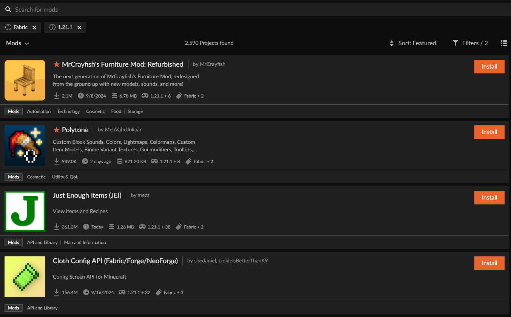

Recursos y Mods
Los paquetes de recursos y los mods son herramientas clave para mejorar y personalizar Minecraft. Los paquetes de recursos cambian los sonidos y gráficos del juego, mientras que los mods añaden nuevas funciones y optimizan el rendimiento. En esta sección, te mostraré los que he utilizado en mi mundo supervivencia.
¿Cómo agregar mods y paquetes de recursos?
Para agregar los paquetes de recursos es muy sencillo. Luego de crear nuestra estancia de Minecraft, simplemente le damos donde dice "Add More Content" y nos aparecerá una lista amplia de mods, y será lo mismo para la pestaña de paquetes de recursos.

Una vez aquí, simplemente damos en "Install" y automáticamente los mods se descargarán en nuestra carpeta de mods que se ubica en la carpeta ".minecraft".

Mis Mods y Paquetes de Recursos
Mods
Fabric API
Fabric API es una biblioteca necesaria para ejecutar mods en la plataforma Fabric de Minecraft, proporcionando herramientas y recursos que otros mods utilizan.
Link al Mod
Reese's Sodium Options
Reese's Sodium Options es un complemento para Sodium que permite configurar más fácilmente las opciones de rendimiento del mod, agregando más ajustes visuales y de control.
Link al Mod
Essential Mod
Essential Mod es un complemento para Minecraft que agrega funciones avanzadas de administración y mejora la experiencia multijugador.
 Link al Mod
Link al Mod
Essential Permissions
Essential Permissions es una extensión del Essential Mod que permite gestionar los permisos de los jugadores, controlando quién puede realizar ciertas acciones en el servidor.
Link al Mod
Sodium Extras
Sodium Extras es un complemento para el mod Sodium que agrega más configuraciones avanzadas, permitiendo ajustar aún más el rendimiento gráfico en Minecraft.
Link al Mod
Sodium
Sodium es un mod de rendimiento para Minecraft que optimiza el motor gráfico del juego, mejorando los FPS y reduciendo el lag sin sacrificar calidad visual.
Link al Mod
EMF y ETF
EMF y ETF son complementos para Minecraft que mejoran el manejo de entidades y la representación de fluidos en el juego, optimizando el rendimiento en estas áreas específicas.
Replay Mod
Replay Mod es una herramienta para grabar y reproducir partidas de Minecraft, permitiendo a los jugadores capturar sus sesiones de juego y editarlas con facilidad.
Link al Mod
Paquetes de Recursos
Fancy Crops
Fancy Crops es un paquete de recursos que mejora las texturas de los cultivos en Minecraft, haciéndolos más detallados y visualmente atractivos, ideal para jugadores que quieren un aspecto más realista en sus granjas.
 Link al Paquete de Recursos
Link al Paquete de Recursos
Enchanted Covers
Enchanted Covers es un paquete de recursos que rediseña las texturas de los libros encantados en Minecraft, agregando efectos visuales y detalles que hacen que estos ítems sean más llamativos.
Link al Paquete de Recursos
Dramatic Skys
Dramatic Skys transforma el cielo de Minecraft, añadiendo texturas de alta calidad para crear cielos más dramáticos y realistas, con nubes volumétricas y efectos climáticos impresionantes.
Link al Paquete de Recursos
Colorful Containers
Colorful Containers es un paquete de recursos que modifica las texturas de las interfaces de cofres y contenedores en Minecraft, añadiendo colores vibrantes y un estilo más moderno para mejorar la apariencia del inventario.
Link al Paquete de Recursos
Fresh Animations
Fresh Animations añade nuevas animaciones a las entidades de Minecraft, mejorando la fluidez y realismo de los movimientos de los mobs, sin cambiar el estilo original del juego.
Link al Paquete de Recursos
Fresh Player Animations
Fresh Player Animations es un paquete de recursos que actualiza las animaciones de los jugadores, agregando movimientos más detallados y realistas, como correr, saltar y caminar.
Link al Paquete de Recursos